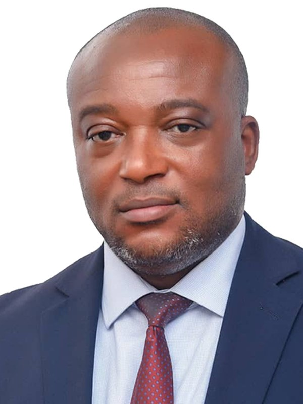
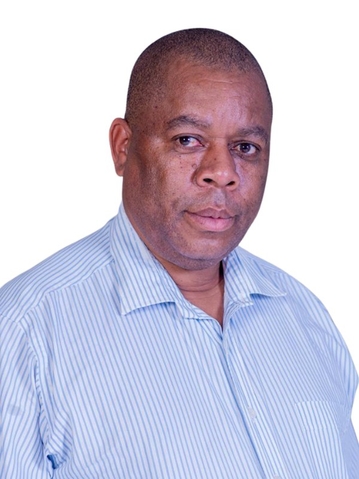
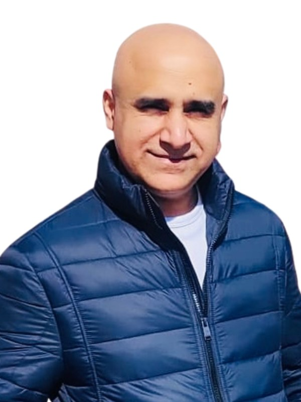

Our board of directors.
Good governance and accountability sit at the centre of how Sanitopia operates. The organisation is led by a diverse board of directors with extensive lived experience and cultural sensitivity to the solutions we deliver in communities across Africa.
The person who started it.

Richard Kojo Acheampong is a father, lawyer, entrepreneur, author and philanthropist whose work spans both the United Kingdom and Ghana. Originally from Ghana, he relocated to the UK in 1998, where he faced profound challenges including a life-changing car accident that led to the amputation of one foot, and repeated threats of deportation during his recovery. Those experiences shaped his determination to succeed against the odds.
Facing barriers in the job market, Richard launched his first business in 2002 and went on to found multiple ventures that today employ hundreds of people across the UK. His entrepreneurial record is matched by his legal career: he qualified as a lawyer in 2016 and holds dual credentials in Ghana and the UK, allowing him to advocate for others facing similar struggles.
Beyond his professional achievements, Richard is committed to philanthropy and community upliftment, supporting initiatives that improve lives in both the United Kingdom and Ghana. His memoir, Crushed But Not Destroyed, gives a full account of his journey, and its proceeds funded Sanitopia's first project at Nkonya Senior High School.
Experience where it counts.

Dr Kankson Kpentey is a business leader and executive holding a Ph.D. in Business Administration. He serves as Executive Director of South-Western Pacific International Limited and as IT & Services Sourcing Lead at Stanbic Bank Ghana Ltd, a member of the Standard Bank Group, bringing more than 22 years of experience across banking, telecommunications, manufacturing, power, energy and education.
His career includes senior appointments as Head of Procurement at Fidelity Bank and Supply Chain Consultant at Vodafone Ghana. He also teaches on master's programmes at GIMPA, Kwame Nkrumah University of Science & Technology and Coventry University via Ghana Communications Technology University, where he serves as an external examiner.
He is a member of the Chartered Institute of Procurement & Supply, the Chartered Institute of Logistics and Transport and the Ghana Institute of Procurement and Supply. His recognitions include the 2022 Coventry University Top 30 Achievers Award and the Standard Bank Group Mark of Excellence.

Dr Archibald Tapuwa James Gumiro is an expert in international and economic development. He began his career as a research fellow at the Southern Africa Foundation for Economic Research, where he built his understanding of the region's economic dynamics.
He went on to work with the United States Agency for International Development, seconded to both SAFER and the Zimbabwe AIDS Network, and later spent several years with the World Health Organisation and the United Nations, working in Zambia, Ethiopia, Kenya, the USA and the UK.
A qualified medical doctor, he brings years of senior management experience in the third sector. When Richard invited him to join Sanitopia he accepted without hesitation, and his experience across the African continent shapes how the organisation plans and delivers its work.
Dr Chris Dokosi is an international consultant with over 25 years of experience advising across international investment, business development, institutional data governance, information technology and cybersecurity.
He has consulted across defence, banking and finance, asset management, insurance, oil and gas, telecommunications and the public sector, supporting institutions including the Home Office, HM Revenue & Customs and local government bodies. As CEO of OS-L Ltd for over a decade he has built international partnerships, and in July 2023 he received the African Achievers Award for Excellence in Business Development.
He is founder of the Chris-Dokosi Foundation, a non-profit dedicated to community development and empowerment across West, Central and East Africa, and an advocate for inclusive, environmentally responsible development.

Gurpreet Gill is a business leader with a focus on developing people, building resilient teams and scaling high-performing organisations. He has served as a director at multiple organisations across IT, marketing, accounting, medical and third sector.
Whether leading operational transformations, mentoring emerging leaders or launching growth initiatives, he is known for turning complexity into clarity and delivering results that last. He is an advocate for innovation and continuous improvement, exploring how emerging technologies can build more agile and human-centric businesses.
Outside work he enjoys reading, running and following developments in technology. A quote he often shares with his mentees captures his philosophy: "Don't be so attached to who you are in the present, that you don't give the future version of yourself a chance."
Nana Yaa Owusu-Aduome is a legal and corporate professional with over 13 years of experience in corporate and legal practice, with a background in administration, supervision and management.
She serves as Country Director and Legal Advisor for DEBCEE J Foundation, a non-profit registered in Belgium and Ghana which runs projects in healthcare and education and supports underprivileged groups, senior citizens and persons with disabilities. In 2024 the foundation launched The African Festival Belgium.
She has held roles as Senior Partner at Shield & Case Law Firm and Head of Legal at Ghana Cylinder Manufacturing Company Limited, and is a member of the Ghana Bar Association. She holds an Executive MBA in Finance, an LLB, a BA in Psychology and the Barrister of Laws certificate from the Ghana School of Law, and is the author of the novel Against Silences to Come.
Talk to us about partnering in Ghana.
Our directors are directly involved in how projects are scoped, funded and delivered. If you are considering working with Sanitopia, speak to us.